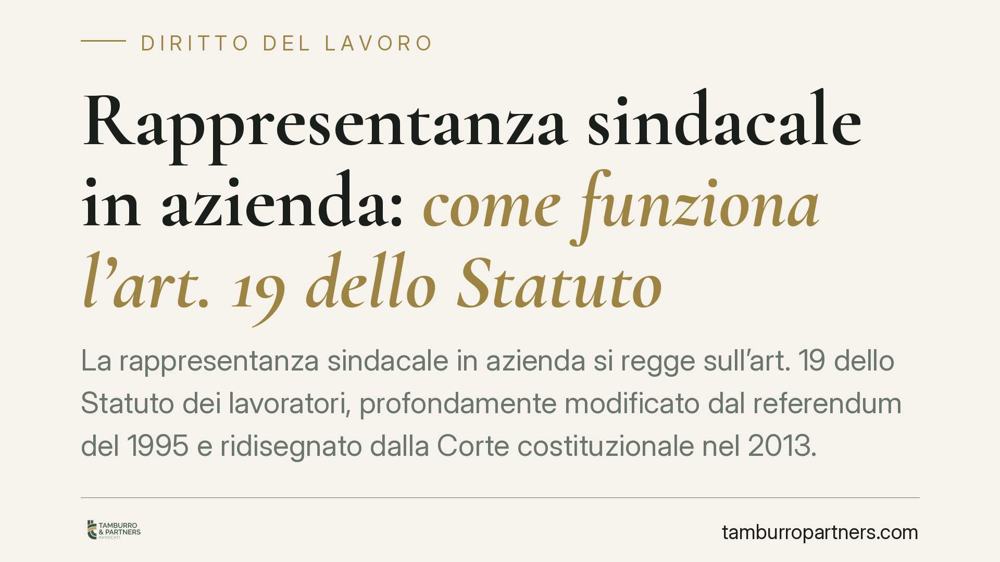

Rappresentanza sindacale in azienda: come funziona l'art. 19 dello Statuto
La rappresentanza sindacale in azienda si regge sull'art. 19 dello Statuto dei lavoratori, profondamente modificato dal referendum del 1995 e ridisegnato dalla Corte costituzionale nel 2013. Capire chi può costituire una RSA e con quali requisiti è decisivo per datori, sindacati e lavoratori, perché da qui dipendono diritti, agibilità e possibili contenziosi per condotta antisindacale.

Il quadro
La presenza organizzata dei sindacati nei luoghi di lavoro passa dalle rappresentanze sindacali aziendali (RSA), disciplinate dall'art. 19 della L. 300/1970 (Statuto dei lavoratori). Le RSA sono strutture di base del sindacato in azienda: il loro riconoscimento dà accesso a specifiche tutele e prerogative previste dal Titolo III dello Statuto (permessi, locali, assemblee).
La materia è stata oggetto di due passaggi decisivi. Prima il referendum abrogativo del 1995, che ha cancellato il precedente criterio di selezione fondato sulla "maggiore rappresentatività". Poi la Corte costituzionale con la sentenza n. 231/2013, che ne ha ridisegnato l'applicazione. È bene distinguere i due momenti: non si tratta di un ritorno all'assetto pre-1995, ma di un correttivo all'assetto risultante dal referendum.
Inquadramento normativo
Dopo il referendum del 1995, l'art. 19 consente la costituzione di RSA nell'ambito delle associazioni sindacali "firmatarie di contratti collettivi applicati nell'unità produttiva". La formula, letta rigidamente, produceva un effetto distorsivo: un sindacato poteva restare escluso dalle prerogative aziendali per il solo fatto di non aver sottoscritto il contratto, anche quando aveva un consenso reale tra i lavoratori.
Su questo è intervenuta la Corte costituzionale con la sentenza n. 231/2013, che ha dichiarato l'illegittimità costituzionale dell'art. 19, lett. b), nella parte in cui non consentiva la costituzione di RSA a sindacati che avessero partecipato alla negoziazione relativa ai contratti collettivi applicati nell'unità produttiva, pur non avendoli sottoscritti. Il criterio selettivo, cioè, non è più la mera firma, ma anche la partecipazione effettiva alla trattativa.
Resta fermo l'art. 28 dello Statuto, che tutela contro la condotta antisindacale: comportamenti del datore diretti a impedire o limitare l'esercizio della libertà e dell'attività sindacale possono essere repressi con procedimento d'urgenza su ricorso delle organizzazioni sindacali.
Implicazioni pratiche
Per i datori di lavoro. L'esclusione di un sindacato dalle prerogative aziendali non può basarsi solo sull'assenza di firma sul contratto applicato. Se l'organizzazione ha partecipato alla trattativa, negarle spazi, permessi o agibilità espone al rischio di ricorso ex art. 28.
Per i sindacati. La partecipazione documentata al tavolo negoziale diventa un elemento rilevante per rivendicare la costituzione di RSA, a prescindere dalla sottoscrizione finale dell'accordo.
Per i lavoratori. Un sistema di rappresentanza più aperto amplia la possibilità di trovare in azienda un referente sindacale effettivamente scelto, ma non modifica di per sé le regole delle RSU, che seguono la disciplina degli accordi interconfederali.
Un chiarimento sul rappresentante dei lavoratori per la sicurezza (RLS): la sua designazione è disciplinata dal D.Lgs. 81/2008 e segue regole proprie, distinte dai criteri dell'art. 19. Un eventuale collegamento è solo indiretto e non va sovrapposto alla materia delle RSA.
Cosa fare in concreto
- Datori: ricostruite per iscritto chi ha effettivamente partecipato alle trattative aziendali, non solo chi ha firmato, prima di gestire richieste di agibilità sindacale.
- Datori: verificate che regolamenti interni e prassi su permessi, assemblee e locali siano coerenti con l'interpretazione dell'art. 19 successiva al 2013.
- Sindacati: documentate la partecipazione ai tavoli negoziali (verbali, convocazioni, corrispondenza), perché è l'elemento su cui si fonda la richiesta di costituire RSA.
- Sindacati: valutate lo strumento dell'art. 28 St. Lav. in caso di esclusione ingiustificata dalle prerogative aziendali.
- Lavoratori: informatevi su quali rappresentanze operino nell'unità produttiva e con quali competenze, distinguendo RSA, RSU e RLS.
Lettura d'insieme
La disciplina della rappresentanza in azienda è tecnica e stratificata: piccoli errori di inquadramento generano contenzioso. È opportuno rivalutare periodicamente contratti aziendali e prassi sindacali alla luce dell'interpretazione consolidata dell'art. 19, distinguendo con precisione i diversi istituti e i loro presupposti.
Ogni storia di lavoro ha i suoi tempi.
Se gestisci HR e vuoi un confronto su contenzioso, ispezioni o licenziamenti, scrivi allo studio. Ti rispondiamo entro un giorno lavorativo.